2025 Advanced Higher Computing Science marking instructions
Source: Scottish Qualifications Authority (SQA) / Qualifications Scotland. This is a StemInteract HTML companion, not an official HTML edition. Selectable text is supplied alongside original page images. Use the images or original PDF for equations, powers, fractions, vector notation, tables and diagrams; text extraction cannot fully preserve mathematical layout.
Jump to a question
PDF page 1
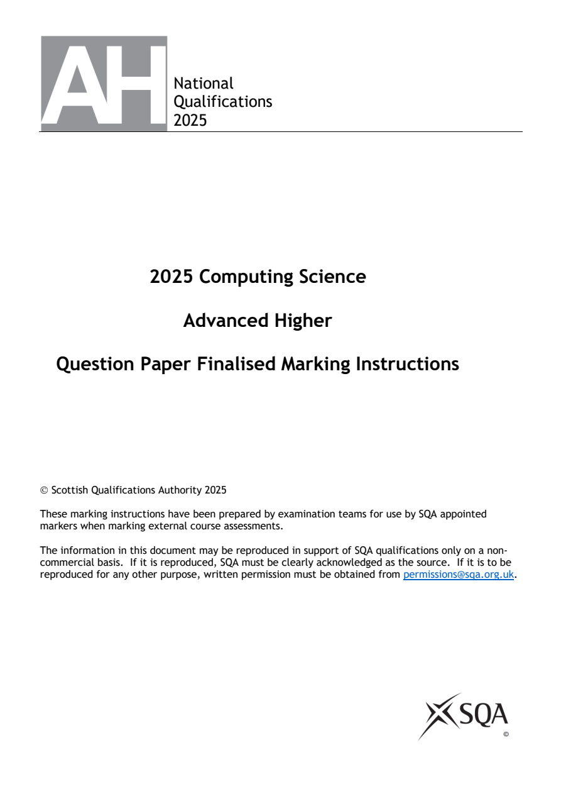
Selectable page text
National
Qualifications
2025
2025 Computing Science
Advanced Higher
Question Paper Finalised Marking Instructions
Scottish Qualifications Authority 2025
These marking instructions have been prepared by examination teams for use by SQA appointed
markers when marking external course assessments.
The information in this document may be reproduced in support of SQA qualifications only on a non-
commercial basis. If it is reproduced, SQA must be clearly acknowledged as the source. If it is to be
reproduced for any other purpose, written permission must be obtained from permissions@sqa.org.uk.PDF page 2
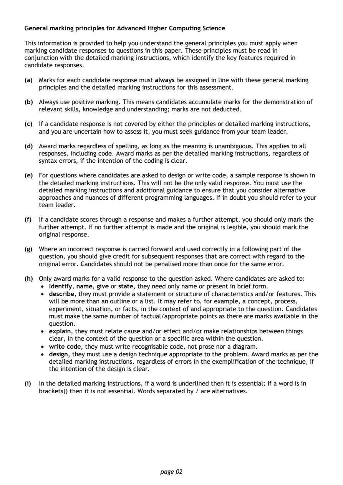
Selectable page text
General marking principles for Advanced Higher Computing Science
This information is provided to help you understand the general principles you must apply when
marking candidate responses to questions in this paper. These principles must be read in
conjunction with the detailed marking instructions, which identify the key features required in
candidate responses.
(a) Marks for each candidate response must always be assigned in line with these general marking
principles and the detailed marking instructions for this assessment.
(b) Always use positive marking. This means candidates accumulate marks for the demonstration of
relevant skills, knowledge and understanding; marks are not deducted.
(c) If a candidate response is not covered by either the principles or detailed marking instructions,
and you are uncertain how to assess it, you must seek guidance from your team leader.
(d) Award marks regardless of spelling, as long as the meaning is unambiguous. This applies to all
responses, including code. Award marks as per the detailed marking instructions, regardless of
syntax errors, if the intention of the coding is clear.
(e) For questions where candidates are asked to design or write code, a sample response is shown in
the detailed marking instructions. This will not be the only valid response. You must use the
detailed marking instructions and additional guidance to ensure that you consider alternative
approaches and nuances of different programming languages. If in doubt you should refer to your
team leader.
(f) If a candidate scores through a response and makes a further attempt, you should only mark the
further attempt. If no further attempt is made and the original is legible, you should mark the
original response.
(g) Where an incorrect response is carried forward and used correctly in a following part of the
question, you should give credit for subsequent responses that are correct with regard to the
original error. Candidates should not be penalised more than once for the same error.
(h) Only award marks for a valid response to the question asked. Where candidates are asked to:
• Identify, name, give or state, they need only name or present in brief form.
• describe, they must provide a statement or structure of characteristics and/or features. This
will be more than an outline or a list. It may refer to, for example, a concept, process,
experiment, situation, or facts, in the context of and appropriate to the question. Candidates
must make the same number of factual/appropriate points as there are marks available in the
question.
• explain, they must relate cause and/or effect and/or make relationships between things
clear, in the context of the question or a specific area within the question.
• write code, they must write recognisable code, not prose nor a diagram.
• design, they must use a design technique appropriate to the problem. Award marks as per the
detailed marking instructions, regardless of errors in the exemplification of the technique, if
the intention of the design is clear.
(i) In the detailed marking instructions, if a word is underlined then it is essential; if a word is in
brackets() then it is not essential. Words separated by / are alternatives.
page 02PDF page 3
Question 1Question 2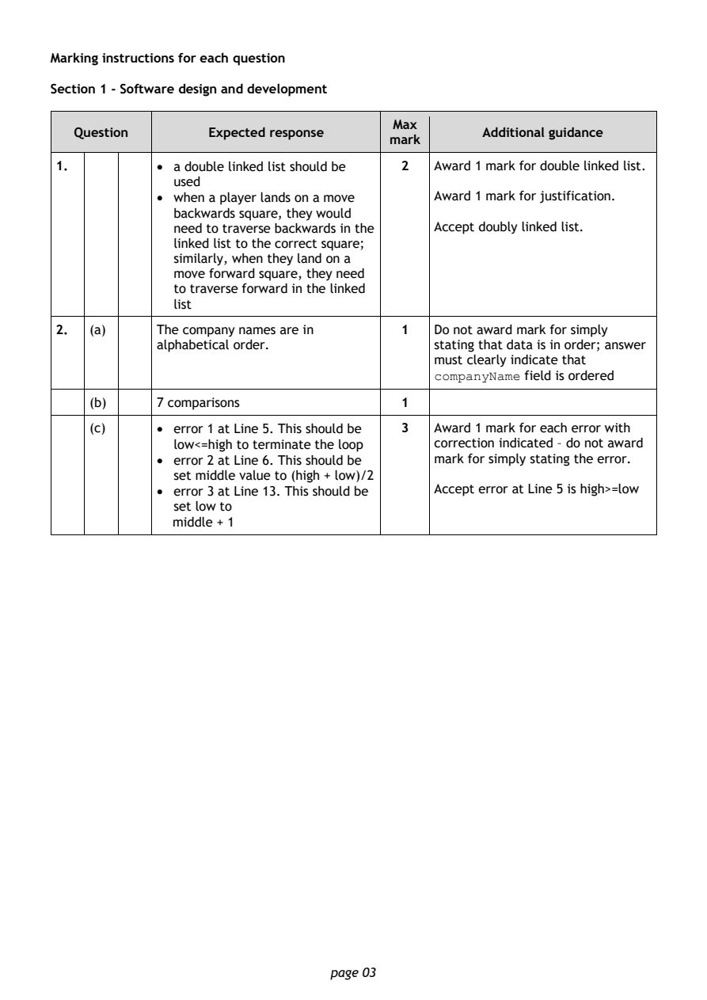
Selectable page text
Marking instructions for each question
Section 1 - Software design and development
Max
Question Expected response Additional guidance
mark
1. • a double linked list should be 2 Award 1 mark for double linked list.
used
• when a player lands on a move Award 1 mark for justification.
backwards square, they would
need to traverse backwards in the Accept doubly linked list.
linked list to the correct square;
similarly, when they land on a
move forward square, they need
to traverse forward in the linked
list
2. (a) The company names are in 1 Do not award mark for simply
alphabetical order. stating that data is in order; answer
must clearly indicate that
field is ordered
companyName
(b) 7 comparisons 1
(c) • error 1 at Line 5. This should be 3 Award 1 mark for each error with
low<=high to terminate the loop correction indicated – do not award
• error 2 at Line 6. This should be mark for simply stating the error.
set middle value to (high + low)/2
• error 3 at Line 13. This should be Accept error at Line 5 is high>=low
set low to
middle + 1
page 03PDF page 4
Question 3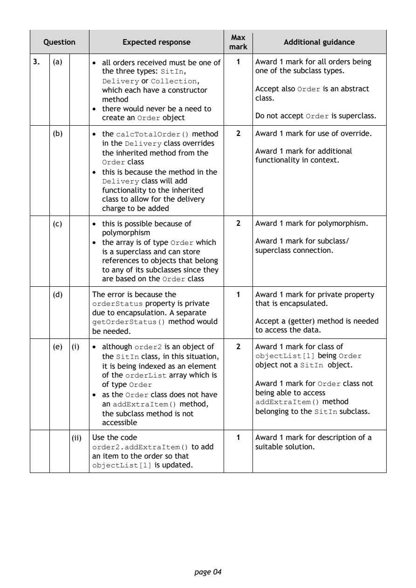
Selectable page text
Max
Question Expected response Additional guidance
mark
3. (a) • all orders received must be one of 1 Award 1 mark for all orders being
the three types: , one of the subclass types.
SitIn
or ,
Delivery Collection
which each have a constructor Accept also Order is an abstract
method class.
• there would never be a need to
create an Order object Do not accept Order is superclass.
(b) • the method 2 Award 1 mark for use of override.
calcTotalOrder()
in the class overrides
Delivery
the inherited method from the Award 1 mark for additional
class functionality in context.
Order
• this is because the method in the
class will add
Delivery
functionality to the inherited
class to allow for the delivery
charge to be added
(c) • this is possible because of 2 Award 1 mark for polymorphism.
polymorphism
• the array is of type which Award 1 mark for subclass/
Order
is a superclass and can store superclass connection.
references to objects that belong
to any of its subclasses since they
are based on the class
Order
(d) The error is because the 1 Award 1 mark for private property
property is private that is encapsulated.
orderStatus
due to encapsulation. A separate
method would Accept a (getter) method is needed
getOrderStatus()
be needed. to access the data.
(e) (i) • although is an object of 2 Award 1 mark for class of
order2
the class, in this situation, being
SitIn objectList[1] Order
it is being indexed as an element object not a SitIn object.
of the array which is
orderList
of type Order Award 1 mark for Order class not
• as the class does not have being able to access
Order
method
an method, addExtraItem()
addExtraItem()
belonging to the subclass.
the subclass method is not SitIn
accessible
(ii) Use the code 1 Award 1 mark for description of a
to add suitable solution.
order2.addExtraItem()
an item to the order so that
is updated.
objectList[1]
page 04PDF page 5
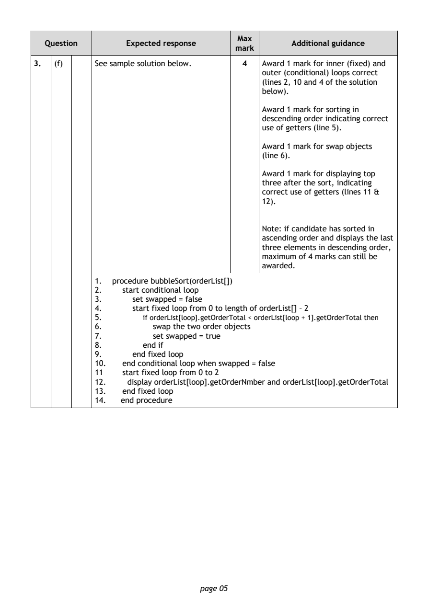
Selectable page text
Max
Question Expected response Additional guidance
mark
3. (f) See sample solution below. 4 Award 1 mark for inner (fixed) and
outer (conditional) loops correct
(lines 2, 10 and 4 of the solution
below).
Award 1 mark for sorting in
descending order indicating correct
use of getters (line 5).
Award 1 mark for swap objects
(line 6).
Award 1 mark for displaying top
three after the sort, indicating
correct use of getters (lines 11 &
12).
Note: if candidate has sorted in
ascending order and displays the last
three elements in descending order,
maximum of 4 marks can still be
awarded.
1. procedure bubbleSort(orderList[])
2. start conditional loop
3. set swapped = false
4. start fixed loop from 0 to length of orderList[] – 2
5. if orderList[loop].getOrderTotal < orderList[loop + 1].getOrderTotal then
6. swap the two order objects
7. set swapped = true
8. end if
9. end fixed loop
10. end conditional loop when swapped = false
11 start fixed loop from 0 to 2
12. display orderList[loop].getOrderNmber and orderList[loop].getOrderTotal
13. end fixed loop
14. end procedure
page 05PDF page 6
Question 4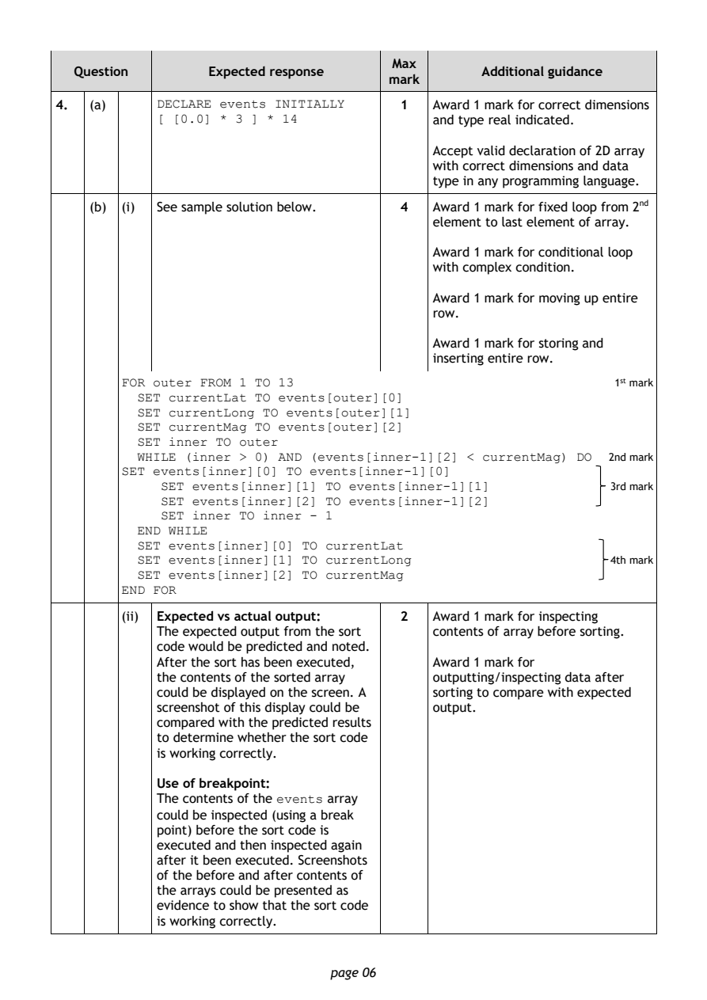
Selectable page text
Max
Question Expected response Additional guidance
mark
4. (a) 1 Award 1 mark for correct dimensions
DECLARE events INITIALLY
and type real indicated.
[ [0.0] * 3 ] * 14
Accept valid declaration of 2D array
with correct dimensions and data
type in any programming language.
(b) (i) See sample solution below. 4 Award 1 mark for fixed loop from 2nd
element to last element of array.
Award 1 mark for conditional loop
with complex condition.
Award 1 mark for moving up entire
row.
Award 1 mark for storing and
inserting entire row.
1st mark
FOR outer FROM 1 TO 13
SET currentLat TO events[outer][0]
SET currentLong TO events[outer][1]
SET currentMag TO events[outer][2]
SET inner TO outer
2nd mark
WHILE (inner > 0) AND (events[inner-1][2] < currentMag) DO
SET events[inner][0] TO events[inner-1][0]
3rd mark
SET events[inner][1] TO events[inner-1][1]
SET events[inner][2] TO events[inner-1][2]
SET inner TO inner - 1
END WHILE
SET events[inner][0] TO currentLat
4th mark
SET events[inner][1] TO currentLong
SET events[inner][2] TO currentMag
END FOR
(ii) Expected vs actual output: 2 Award 1 mark for inspecting
The expected output from the sort contents of array before sorting.
code would be predicted and noted.
After the sort has been executed, Award 1 mark for
the contents of the sorted array outputting/inspecting data after
could be displayed on the screen. A sorting to compare with expected
screenshot of this display could be output.
compared with the predicted results
to determine whether the sort code
is working correctly.
Use of breakpoint:
The contents of the array
events
could be inspected (using a break
point) before the sort code is
executed and then inspected again
after it been executed. Screenshots
of the before and after contents of
the arrays could be presented as
evidence to show that the sort code
is working correctly.
page 06PDF page 7
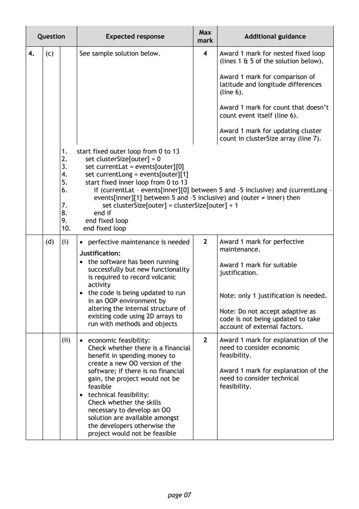
Selectable page text
Max
Question Expected response Additional guidance
mark
4. (c) See sample solution below. 4 Award 1 mark for nested fixed loop
(lines 1 & 5 of the solution below).
Award 1 mark for comparison of
latitude and longitude differences
(line 6).
Award 1 mark for count that doesn’t
count event itself (line 6).
Award 1 mark for updating cluster
count in clusterSize array (line 7).
1. start fixed outer loop from 0 to 13
2. set clusterSize[outer] = 0
3. set currentLat = events[outer][0]
4. set currentLong = events[outer][1]
5. start fixed inner loop from 0 to 13
6. if (currentLat – events[inner][0] between 5 and –5 inclusive) and (currentLong –
events[inner][1] between 5 and –5 inclusive) and (outer ≠ inner) then
7. set clusterSize[outer] = clusterSize[outer] + 1
8. end if
9. end fixed loop
10. end fixed loop
(d) (i) • perfective maintenance is needed 2 Award 1 mark for perfective
maintenance.
Justification:
• the software has been running
Award 1 mark for suitable
successfully but new functionality
justification.
is required to record volcanic
activity
• the code is being updated to run
Note: only 1 justification is needed.
in an OOP environment by
altering the internal structure of
Note: Do not accept adaptive as
existing code using 2D arrays to
code is not being updated to take
run with methods and objects
account of external factors.
(ii) • economic feasibility: 2 Award 1 mark for explanation of the
Check whether there is a financial need to consider economic
benefit in spending money to feasibility.
create a new OO version of the
software; if there is no financial Award 1 mark for explanation of the
gain, the project would not be need to consider technical
feasible feasibility.
• technical feasibility:
Check whether the skills
necessary to develop an OO
solution are available amongst
the developers otherwise the
project would not be feasible
page 07PDF page 8
Question 5Question 6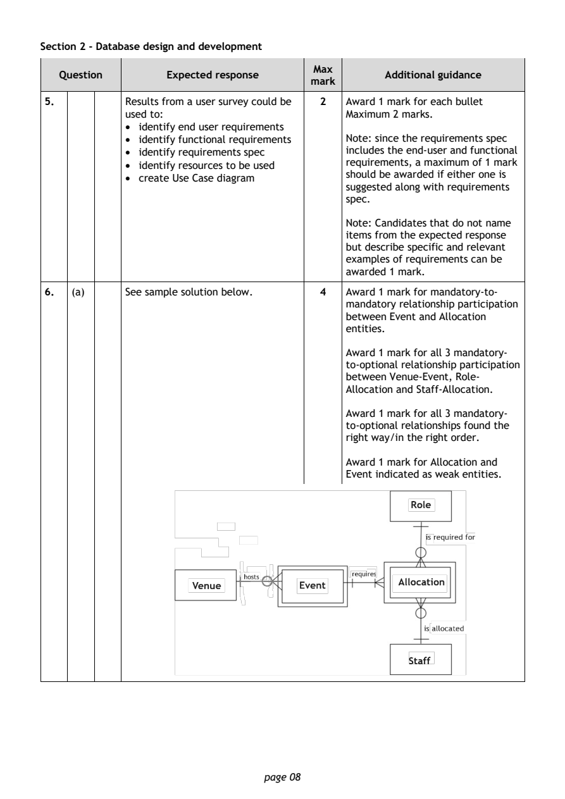
Selectable page text
Section 2 - Database design and development
Max
Question Expected response Additional guidance
mark
5. Results from a user survey could be 2 Award 1 mark for each bullet
used to: Maximum 2 marks.
• identify end user requirements
• identify functional requirements Note: since the requirements spec
• identify requirements spec includes the end-user and functional
• identify resources to be used requirements, a maximum of 1 mark
should be awarded if either one is
• create Use Case diagram
suggested along with requirements
spec.
Note: Candidates that do not name
items from the expected response
but describe specific and relevant
examples of requirements can be
awarded 1 mark.
6. (a) See sample solution below. 4 Award 1 mark for mandatory-to-
mandatory relationship participation
between Event and Allocation
entities.
Award 1 mark for all 3 mandatory-
to-optional relationship participation
between Venue-Event, Role-
Allocation and Staff-Allocation.
Award 1 mark for all 3 mandatory-
to-optional relationships found the
right way/in the right order.
Award 1 mark for Allocation and
Event indicated as weak entities.
page 08PDF page 9
Question 7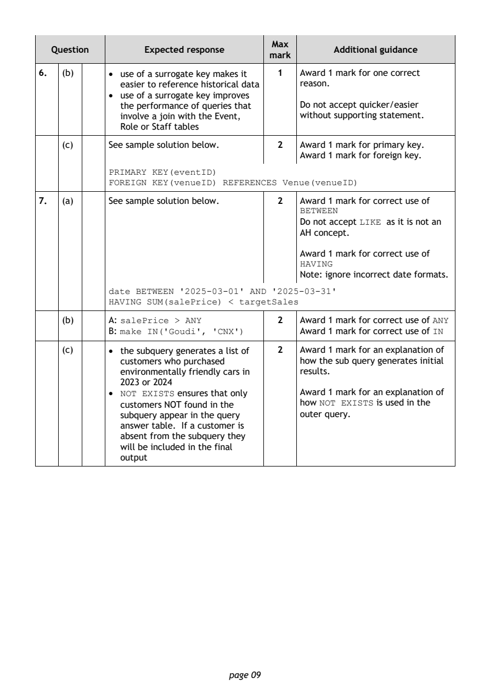
Selectable page text
Max
Question Expected response Additional guidance
mark
6. (b) • use of a surrogate key makes it 1 Award 1 mark for one correct
easier to reference historical data reason.
• use of a surrogate key improves
the performance of queries that Do not accept quicker/easier
involve a join with the Event, without supporting statement.
Role or Staff tables
(c) See sample solution below. 2 Award 1 mark for primary key.
Award 1 mark for foreign key.
PRIMARY KEY(eventID)
FOREIGN KEY(venueID) REFERENCES Venue(venueID)
7. (a) See sample solution below. 2 Award 1 mark for correct use of
BETWEEN
Do not accept as it is not an
LIKE
AH concept.
Award 1 mark for correct use of
HAVING
Note: ignore incorrect date formats.
date BETWEEN '2025-03-01' AND '2025-03-31'
HAVING SUM(salePrice) < targetSales
(b) A: 2 Award 1 mark for correct use of
salePrice > ANY ANY
B: Award 1 mark for correct use of
make IN('Goudi', 'CNX') IN
(c) • the subquery generates a list of 2 Award 1 mark for an explanation of
customers who purchased how the sub query generates initial
environmentally friendly cars in results.
2023 or 2024
• ensures that only Award 1 mark for an explanation of
NOT EXISTS
customers NOT found in the how NOT EXISTS is used in the
subquery appear in the query outer query.
answer table. If a customer is
absent from the subquery they
will be included in the final
output
page 09PDF page 10
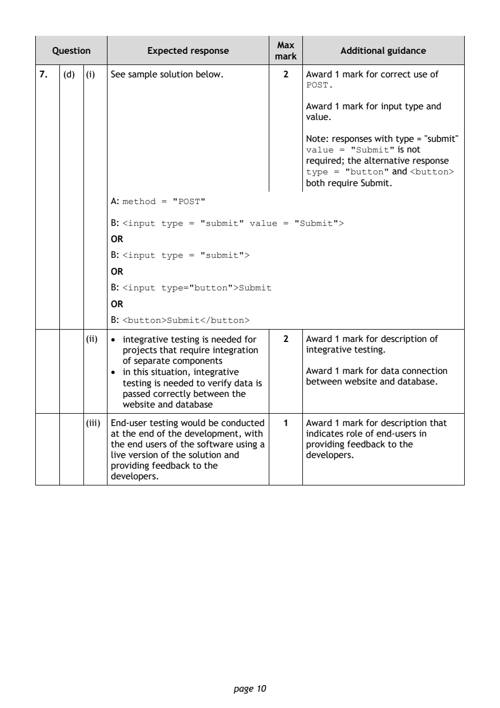
Selectable page text
Max
Question Expected response Additional guidance
mark
7. (d) (i) See sample solution below. 2 Award 1 mark for correct use of
POST.
Award 1 mark for input type and
value.
Note: responses with type = "submit"
is not
value = "Submit"
required; the alternative response
and
type = "button" <button>
both require Submit.
A:
method = "POST"
B:
<input type = "submit" value = "Submit">
OR
B:
<input type = "submit">
OR
B:
<input type="button">Submit
OR
B:
<button>Submit</button>
(ii) • integrative testing is needed for 2 Award 1 mark for description of
projects that require integration integrative testing.
of separate components
• in this situation, integrative Award 1 mark for data connection
testing is needed to verify data is between website and database.
passed correctly between the
website and database
(iii) End-user testing would be conducted 1 Award 1 mark for description that
at the end of the development, with indicates role of end-users in
the end users of the software using a providing feedback to the
live version of the solution and developers.
providing feedback to the
developers.
page 10PDF page 11
Question 8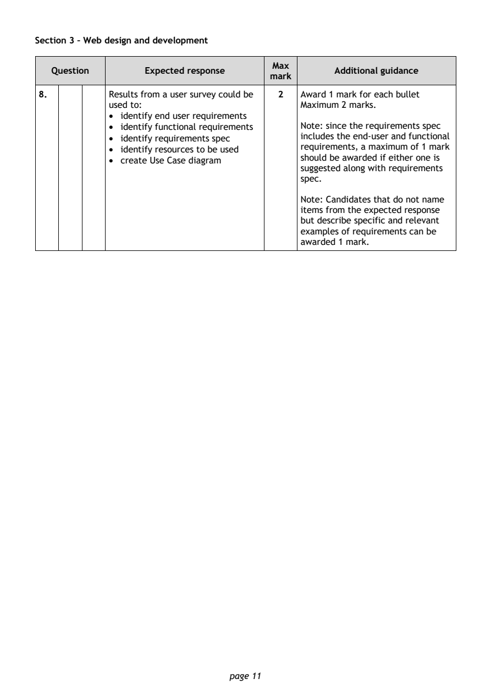
Selectable page text
Section 3 – Web design and development
Max
Question Expected response Additional guidance
mark
8. Results from a user survey could be 2 Award 1 mark for each bullet
used to: Maximum 2 marks.
• identify end user requirements
• identify functional requirements Note: since the requirements spec
• identify requirements spec includes the end-user and functional
• identify resources to be used requirements, a maximum of 1 mark
should be awarded if either one is
• create Use Case diagram
suggested along with requirements
spec.
Note: Candidates that do not name
items from the expected response
but describe specific and relevant
examples of requirements can be
awarded 1 mark.
page 11PDF page 12
Question 9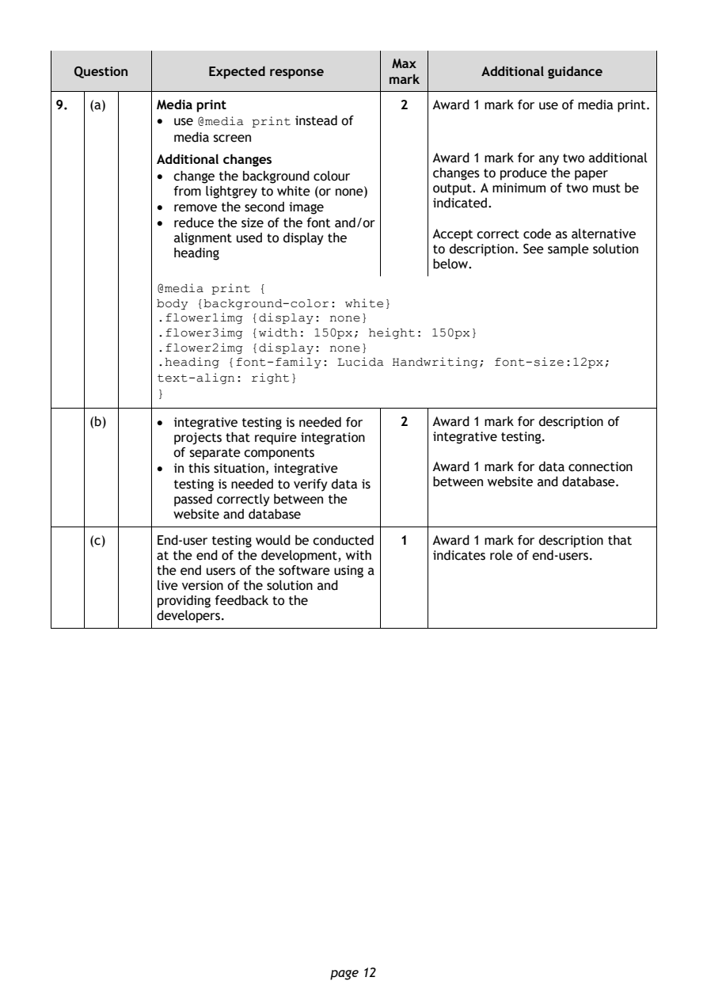
Selectable page text
Max
Question Expected response Additional guidance
mark
9. (a) Media print 2 Award 1 mark for use of media print.
• use instead of
@media print
media screen
Additional changes Award 1 mark for any two additional
• change the background colour changes to produce the paper
from lightgrey to white (or none) output. A minimum of two must be
• remove the second image indicated.
• reduce the size of the font and/or
Accept correct code as alternative
alignment used to display the
to description. See sample solution
heading
below.
@media print {
body {background-color: white}
.flower1img {display: none}
.flower3img {width: 150px; height: 150px}
.flower2img {display: none}
.heading {font-family: Lucida Handwriting; font-size:12px;
text-align: right}
}
(b) • integrative testing is needed for 2 Award 1 mark for description of
projects that require integration integrative testing.
of separate components
• in this situation, integrative Award 1 mark for data connection
testing is needed to verify data is between website and database.
passed correctly between the
website and database
(c) End-user testing would be conducted 1 Award 1 mark for description that
at the end of the development, with indicates role of end-users.
the end users of the software using a
live version of the solution and
providing feedback to the
developers.
page 12PDF page 13
Question 10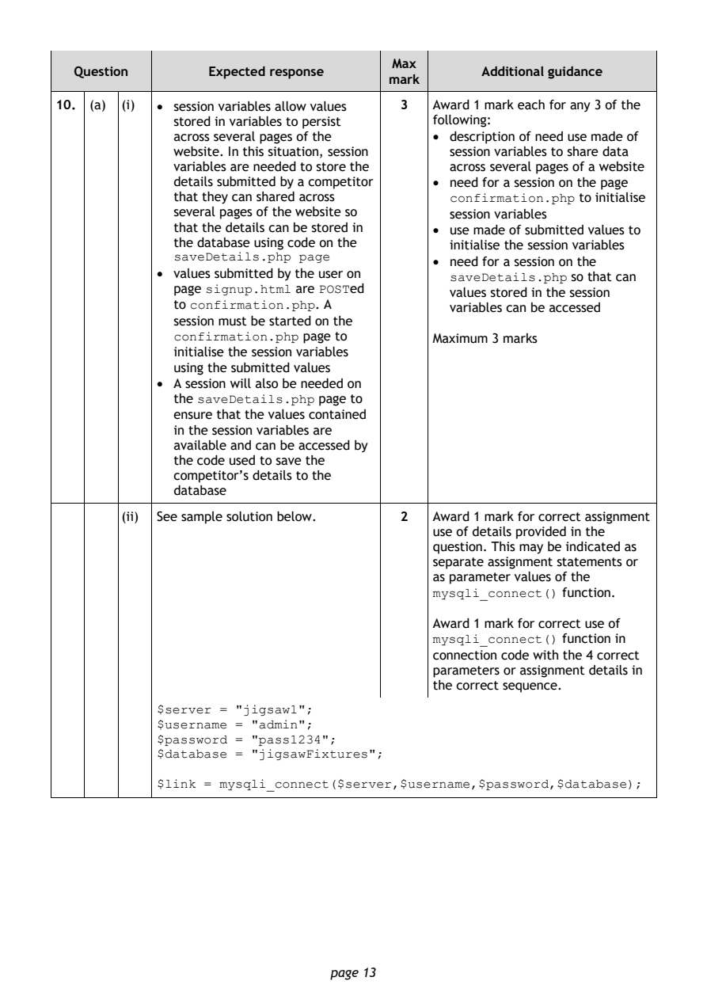
Selectable page text
Max
Question Expected response Additional guidance
mark
10. (a) (i) • session variables allow values 3 Award 1 mark each for any 3 of the
stored in variables to persist following:
across several pages of the • description of need use made of
website. In this situation, session session variables to share data
variables are needed to store the across several pages of a website
details submitted by a competitor • need for a session on the page
that they can shared across to initialise
confirmation.php
several pages of the website so session variables
that the details can be stored in • use made of submitted values to
the database using code on the initialise the session variables
saveDetails.php page • need for a session on the
• values submitted by the user on so that can
saveDetails.php
page are ed
signup.html POST values stored in the session
to confirmation.php . A variables can be accessed
session must be started on the
confirmation.php page to Maximum 3 marks
initialise the session variables
using the submitted values
• A session will also be needed on
the page to
saveDetails.php
ensure that the values contained
in the session variables are
available and can be accessed by
the code used to save the
competitor’s details to the
database
(ii) See sample solution below. 2 Award 1 mark for correct assignment
use of details provided in the
question. This may be indicated as
separate assignment statements or
as parameter values of the
function.
mysqli_connect()
Award 1 mark for correct use of
function in
mysqli_connect()
connection code with the 4 correct
parameters or assignment details in
the correct sequence.
$server = "jigsaw1";
$username = "admin";
$password = "pass1234";
$database = "jigsawFixtures";
$link = mysqli_connect($server,$username,$password,$database);
page 13PDF page 14
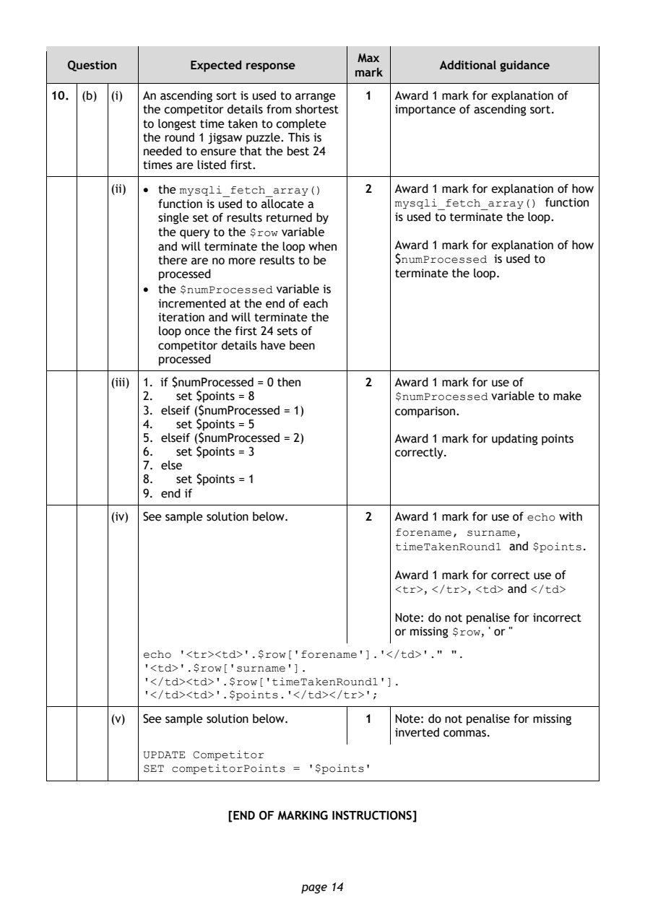
Selectable page text
Max
Question Expected response Additional guidance
mark
10. (b) (i) An ascending sort is used to arrange 1 Award 1 mark for explanation of
the competitor details from shortest importance of ascending sort.
to longest time taken to complete
the round 1 jigsaw puzzle. This is
needed to ensure that the best 24
times are listed first.
(ii) • the 2 Award 1 mark for explanation of how
mysqli_fetch_array()
function is used to allocate a function
mysqli_fetch_array()
single set of results returned by is used to terminate the loop.
the query to the variable
$row
and will terminate the loop when Award 1 mark for explanation of how
there are no more results to be $ is used to
numProcessed
processed terminate the loop.
• the variable is
$numProcessed
incremented at the end of each
iteration and will terminate the
loop once the first 24 sets of
competitor details have been
processed
(iii) 1. if $numProcessed = 0 then 2 Award 1 mark for use of
2. set $points = 8 variable to make
$numProcessed
3. elseif ($numProcessed = 1) comparison.
4. set $points = 5
5. elseif ($numProcessed = 2) Award 1 mark for updating points
6. set $points = 3 correctly.
7. else
8. set $points = 1
9. end if
(iv) See sample solution below. 2 Award 1 mark for use of with
echo
,
forename, surname
and .
timeTakenRound1 $points
Award 1 mark for correct use of
, , and
<tr> </tr> <td> </td>
Note: do not penalise for incorrect
or missing , ' or "
$row
echo '<tr><td>'.$row['forename'].'</td>'." ".
'<td>'.$row['surname'].
'</td><td>'.$row['timeTakenRound1'].
'</td><td>'.$points.'</td></tr>';
(v) See sample solution below. 1 Note: do not penalise for missing
inverted commas.
UPDATE Competitor
SET competitorPoints = '$points'
[END OF MARKING INSTRUCTIONS]
page 14